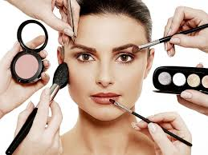

GLOSSY EYES

Esta tendencia sin duda es una de las más atrevidas. No es muy raro utilizar maquillaje de labios para los ojos, de hecho, muchos looks de pasarela utilizan labiales rosas para aunar los párpados con los labios. Pero los glossy eyes no llevan labial, sino ¡bálsamo de labios! Esto le da un toque súper fresco y mucha luminosidad a tu mirada. ¡Estos maquillajes de ojos nos favorecen a todas! Puedes incluso mezclar algunos de ellos e innovar. Recuerda que para resaltar mejor tu mirada, es súper importante tener un buen maquillaje de cejas también. ¿Lista para probarlos?
SOMBRRAS A TODO COLOR
Unas sombras coloridas son otro de los tipos de maquillaje de ojos que también quedan genial, sobre todo en las temporadas de primavera y verano. No tienen por qué ser smokey eyes, o block eyes. Puedes mezclar distintos tonos como más te guste, siempre dejando los más claros para la zona del lagrimal, para no quitarle luminosidad a tu mirada. ¡Saca tu creatividad!
CAT EYES

Empecemos por uno de los maquillajes de ojos más clásicos, y que nunca pasa de moda gracias a que transforma la mirada: los cat eyes. Con la ayuda de un eyeliner fácil de usar, se caracteriza por seguir la línea de pestañas superior y acabarla en un rabillo ascendente. Este tipo de maquillaje de ojos transforma la mirada haciéndola misteriosa, alegre, y agrandándola. Suena bien, ¿verdad?
SMOKEY EYES

Puedes hacerlos en una versión clásica, con tonos negros y grises para un maquillaje nocturna, o bien innovar este look utilizando sombras de otros colores. Para el día, una opción súper recomendable es hacerlos con tonos nude y rosados. ¡Le dará a tu mirada la profundidad perfecta!
OJOS NUDE
El maquillaje natural es ideal para muchas situaciones: reuniones de trabajo, o simplemente como un maquillaje para el día a día. ¿Sabes cuál es la versión más fácil y que da los efectos que tanto estás buscando? Al aplicarte rubor, o contouring utiliza los mismos polvos para maquillar la parte más externa de tus ojos. ¡Es algo que nunca falla!El acabado queda súper natural, y le da mucha profundidad a tu mirada. En caso de que quieras darle más brillo, no dudes en aplicar un poco de polvos claros en el centro del párpado y en el área del lagrimal.
GRAPHIC EYELINER

Si los block eyes no te parecen tan innovadores, entonces seguro que la tendencia del graphic eyeliner te gustará. Esta tendencia incluye un montón de estilos diferentes para que elijas el que más te guste. Hay eyeliners que son más rompedores que otros, y ahí es donde puedes reflejar tu personalidad más atrevida.